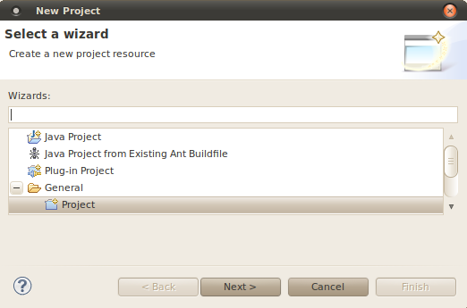
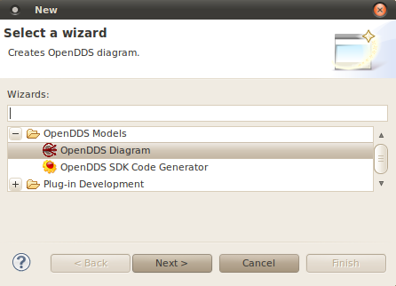

To create an OpenDDS model, an Eclipse project must be identified to contain the model. An existing project of any type can be used, or a project can be created from menu Eclipse File -> New -> Project... . A general project type can used as shown below.
Once a project has been selected a new OpenDDS model can be created from the Eclipse File -> New -> Other... (Ctrl+N) menu item select OpenDDS Diagram under the OpenDDS Models category as shown in the figure below.
The Create OpenDDS Diagram wizard will prompt for the name of the model. This name is used in auto-generated source file names and is used as the name of the shared library. It is also used as the identifier for a C++ namespace.
If you decide to later change the model name, click on an emtpy portion of the main diagram to bring up the name in the property sheet in the Properties tab below the diagram.
After selecting a model name the Create OpenDDS Diagram wizard will then prompt for the name of the diagram file and the name of the file containing domain model itself. It is recommended that when specifying these names that you use the default which is the name of the model itself.
Many diagram-based modeling tools keep both the model and diagram elements in a single file. In the case of the OpenDDS SDK these files are kept separate. Although this will enable alternative representations of the model to be considered, care should be taken that both the domain model file and diagram file are included when sharing OpenDDS models.